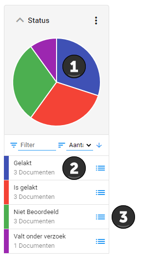

Het is mogelijk om simpelweg te browsen door alle documenten. Door te klikken op een categorie van een cirkeldiagram kunt u inzoomen op de documenten die alleen onder dit gedeelte vallen.
Het browsen kan gebruikt worden om inzicht te krijgen over welke documenten u precies allemaal hebt in ZyLAB ONE.

In het cirkeldiagram Status worden de verschillende statussen binnen de zaak weergegeven. Door op een van de categorien te klikken die onder het cirkeldiagram worden weergegeven is het mogelijk om in te zoomen op de betreffende documenten van die specifieke status. Wanneer u inzoomt op een groep documenten wordt de cirkeldiagram geupdatet voor enkel de bestanden waarop u ingezoomd bent.
Klikt u op taartpunt 1 of in de box bij punt 2, dan browst u een stap dieper met de cirkeldiagrammen (u zult dan inzoomen op enkel de gelakte documenten binnen de zaak).
Klikt u op bij punt 3, dan gaat u direct naar de Documentenlijst met alle documenten die nog niet beoordeeld zijn.
U kunt zien waar u precies bent ingezoomd, door middel van de broodkruimelnavigatie. In het geval van dit voorbeeld zal het er als volgt uitzien.